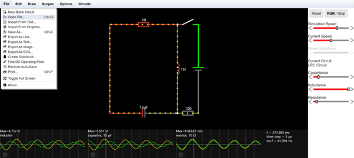
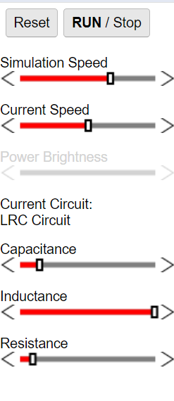
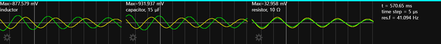
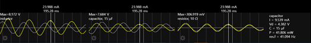
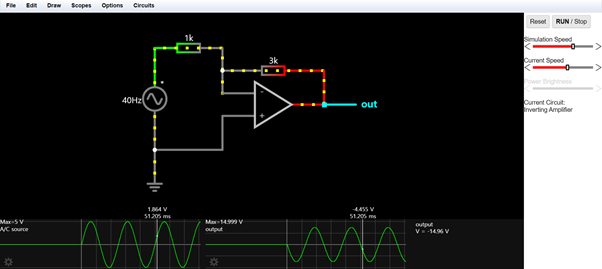
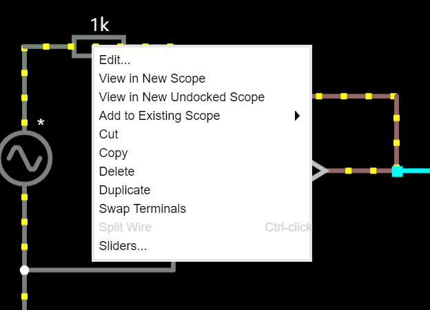
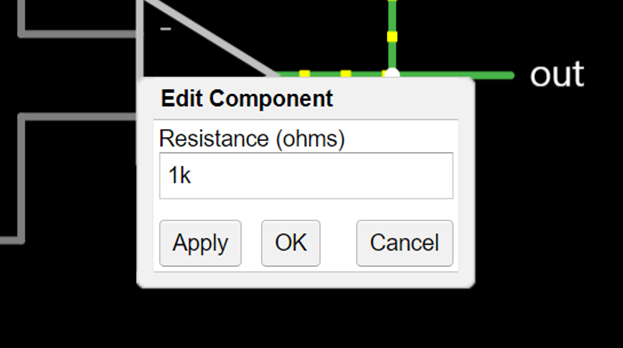

메인메뉴
SPICE Manual
0. Manual에 대하여
본 어플리케이션에서 사용하는 SPICE를 이용하는 방법을 기술합니다.
접속하는 방법: 원하는 회로밑에 있는 SPICE버튼을 누르면, 해당하는 회로 시뮬레이션으로 바로 이동합니다.

다른 회로를 보고싶다면 시뮬레이션 홈에 좌측 상단에 존재하는 circuit 버튼을 눌러서 새로운 spice를 구성할 수 있습니다.
1. LRC 회로에서의 시뮬레이션 읽는 법
SPICE 사용방법(들어가는 법:Circuit -> Basics -> LRC Circuit)

Reset: 회로에 기록된 정보를 다시 짭니다.
RUN/Stop: 회로 정보의 기록을 시작하거나 멈춥니다.
Capacitance:정전용량(電氣容量, capacitance 커패시턴스)는 축전기가 전하를 저장할 수 있는 능력을 나타내는 물리량이며,
단위 전압에서 축전기가 저장하는 전하이다. 국제 단위는 패럿이며, 통상적인 기호는 라틴 대문자 C이다.
Inductance: 인덕턴스 (L)는 전기 전도체를 흐르는 전류로부터 생기는 자기장으로부터 생긴다. 전류가 전도체 내부에서 흐르면
그 주변으로 자기 선속이 생기는데, 수학적으로 인덕턴스는 일정량의 전류(i)가 흐를 때 생기는 자기 선속 (φ)으로서 정의된다.
Resistance: 물질이 전류를 방해하는 성질. 물질 속을 전류가 흐를 때 대부분의 물질에 대해 그 세기는 한 전압의 세기에 비례한다.

시뮬레이션의 하단을 보면 inductor, capacitoer, resistor에서 걸리는 전압과 전류를 알 수 있습니다.
이 때 각 소자의 진상이나 지상을 확인할 수 있습니다. 하단 우측의 t, time step, res.f는 입력 신호에 대한 정보입니다.

시뮬레이션의 하단을 보면 inductor, capacitoer, resistor에서 걸리는 전압과 전류를 알 수 있습니다.
이 때 각 소자의 진상이나 지상을 확인할 수 있습니다. 하단 우측의 t, time step, res.f는 입력 신호에 대한 정보입니다.
2. inverting Amplifier에서의 시뮬레이션 읽는 법
(Circuits -> Op-Amps ->Amplifiers ->Inverting Amplifier)

Ex.1의 설명을 보고나서 다음 회로를 보면 이하 내용을 조금 더 정확하게 알 수 있습니다.
위 회로는 inverting Amplifier로 시뮬레이션 조작 방법은 Ex.1과 같습니다.
시뮬레이션 하단을 보면 A/C source에서 입력 파형이 들어오고 output 단자에서 증폭된 신호가 반전되어 나온다는 사실을 알 수 있습니다.
3. 시뮬레이션 소자(변수) 변경하기

1. 컴퓨터에서 마우스 오른쪽 클릭을 하여 창을 열어, Edit을 누릅니다.

2. 위와 같이 변경할 수 있는 창이 뜨면 원하는 값을 입력합니다.
3. Apply를 누르면 적용됩니다.
4. OK를 누릅니다.
4. 본 어플리케이션에서 이용할 수 있는 회로
1. Class RC:
1) A/C_Circuits-capacitor(60Hz 교류일 때 RC회로)
접속방법: Circuits -> A/C Circuits -> Capacitor
URL: